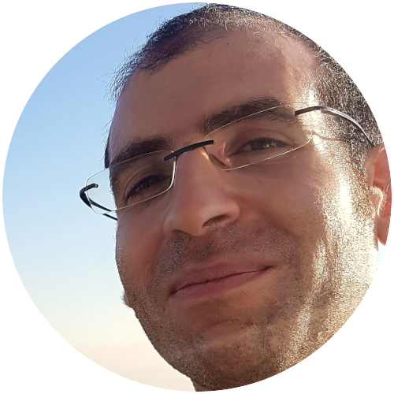
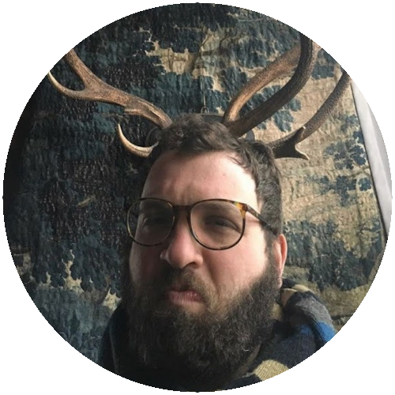
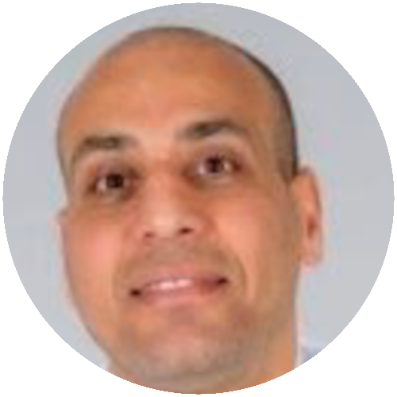
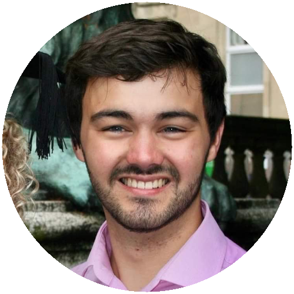

Who are we
A collection of people passionate about making better digital healthcare and education a reality.
Mark Bailey
Mark is the main curator of the Let’s Do Digital Website and lead for the Let’s Do Digital community. He is a locum respiratory consultant and clinician-who-codes. He is passionate about helping others learn about clinical informatics, be they general public, patient or healthcare staff, and he is also passionate about building amazing, useful, friendly and safe clinical apps.
Mentors and tutors

Basil Bekdash
Without portfolio but always chasing the data and trying to make sense of chaos and/or complexity.
A paediatric surgeon by background but very happy to join anyone at the interfaces or outside domains, looking for commonalities obvious and otherwise.
Clinical Safety Officer and a clinical lead for a multi-sector (acute, mental health, community, transport) specialist provider for children and young people for around 3yrs as of now and general champion of the littlest guys which we all once used to be. Children may not be little adults but adults are big children being a principle we could follow quite broadly in data and informatics terms but probably more broadly in health and care.
Technically literate but not especially adept though that’s where the team work comes in.

Alex Brown
Paediatric registrar.
Keith Blackwood
Keith holds a PhD in Tissue Engineering and has completed a Postdoc in Biofabrication. He worked in the medical devices industry before transitioning into a role as a Technology Transfer Officer at the University of Cambridge. With a unique combination of scientific expertise and industry experience, Keith now focuses on providing coding solutions, leveraging his background in medical devices to develop clean, efficient, and practical code for healthcare applications.
Haroon Chughtai
Aparna Ghosh
Aparna is a GP and clinical lecturer working in North London. She graduated with a BA in Medical Sciences from the University of Oxford and an MBBS from University College London. She started coding as a hobby and is currently assisting with the digital transformation of her local food bank.
With a background in mentoring and access work that started at University and continues today, she’s enthusiastic about helping others find roles and opportunities that suit them.
Abdelrahman M. Saad (aka Hadi)
My name is Abdelrahman M. Saad and I’m a final-year medical student working in the digital health industry.
It’s my pleasure to be a mentor for Let’s Do Digital. I call myself “The Geeky Med Student” because I’m always exploring new ways to use my skills in data science and AI, as well as my business acumen, to make healthcare smarter.
Currently, I’m working as a Clinical Informatics Specialist at REAP Holding (digital transformation), a Business Developer at Ebers (digital health and VR), and an R&D Specialist at CellClar (bioinformatics and single-cell genomics).
I have a rich background in training over 30 medical trainees, doctors, and students how to code and build their own AI models, from basic computer science and Python programming to advanced machine learning and deep learning. My journey also involves mentoring research teams on AI-related projects and collaborating with teams from Egypt, the USA, and the UK to help publish research papers that stand out in resumes!!
Whether through clinical research or my entrepreneurial ventures like GeeksHub and the Radiology Intelligence Club, I’m committed to driving the future of medicine. I’m passionate about using AI, advanced analytics, and digital health solutions to improve patient outcomes and tackle the biggest challenges in the medical field.

Remon Hanna
Doctor & Head of data, MedTech
Michael Kriger
Dom Main
Alexandre Mathy
Sam McInerney
Sam, a medical oncology doctor at the Beatson in Glasgow, is also a PhD student at the University of Edinburgh. His research focuses on integrating AI and electronic patient-reported outcomes (ePROMS) into the cancer patient pathway.
A life-long coder, before pursuing medicine Sam did a first degree in computer science and developed a keen interest in AI and neural networks. Following his degree he worked for several years in London’s investment banking industry, specializing in low-latency, ultra-high-performance trading systems.
Sam graduated from St George’s University in London in 2006 after undertaking a graduate entry program into medicine, where Sam’s passion for building software carried over to his work in the NHS. Sam has built several applications since including an IOS app for clinical geneticists called ‘The Genetic Counselling App’ and most recently a system to automate clinic preparation. Additionally, Sam founded DoctorsThatCode.com, a platform that offers tutorials and a blog space to keep up with the rapid advancements in AI and its implementation within healthcare.
Anita Phung
GP and Clinical Informatician

Freddie Renyard
Freddie is a fifth year medical student from the University of Bristol and intercalated bioengineering graduate from Imperial College London who is starting an Academic Foundation Post in Oxford soon.
He is passionate about using new technologies to enhance patient care. He is currently working with the Neurocomputing Lab in Erasmus MC, Rotterdam, where he is accelerating neural simulations to improve our understanding of the brain.
He also has experience in computer engineering and has completed industry and academic internships. During his time with the Particle Physics group at Bristol, he looked into ways that new particle physics hardware could be used in clinical care.
Freddie is interested in improving clinician knowledge about digital technologies. He’s currently working on a course for clinicians to help them work with medical and radiological data: stay tuned for updates!

Grant Vallance
Mathew Vithayathil
Nik Walne
Chris Wilson
Chris is a GP and Urgent Care doctor in Northern Ireland. He graduated from Queen’s University Belfast in 2006.
He has worked with the Royal College of General Practitioners (RCGP) on their Diabetes Quality Improvement Toolkit and been an expedition and diving medic in Madagascar.
Chris started to learn coding in 2015 and developed an interest in clinical informatics. He is a member of the British Computer Society and an independent iOS developer.
Chris also works part time for a London-based company that makes electronic health record and data platform software used in sub-Sarahan Africa and the Middle East.